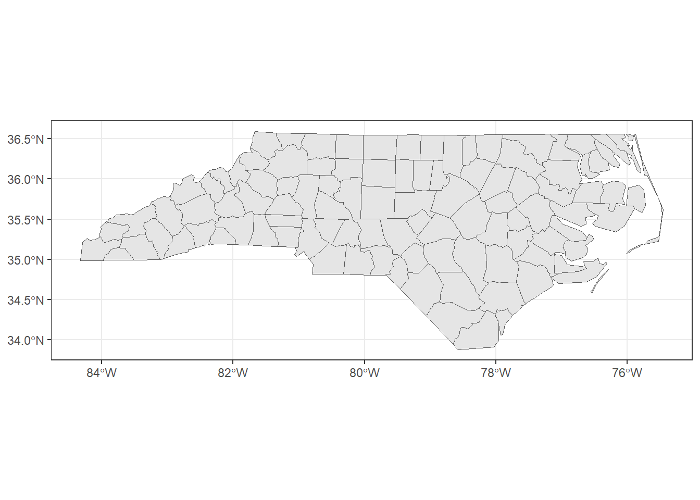
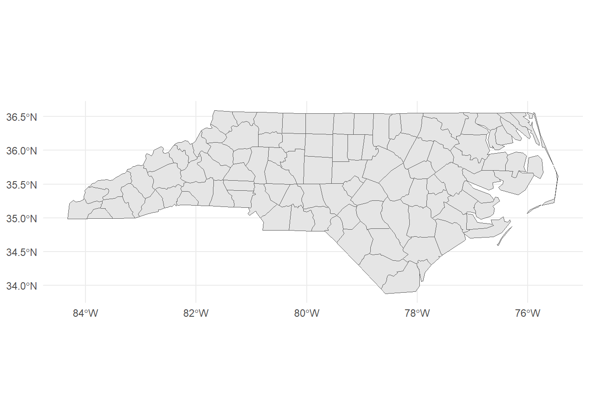
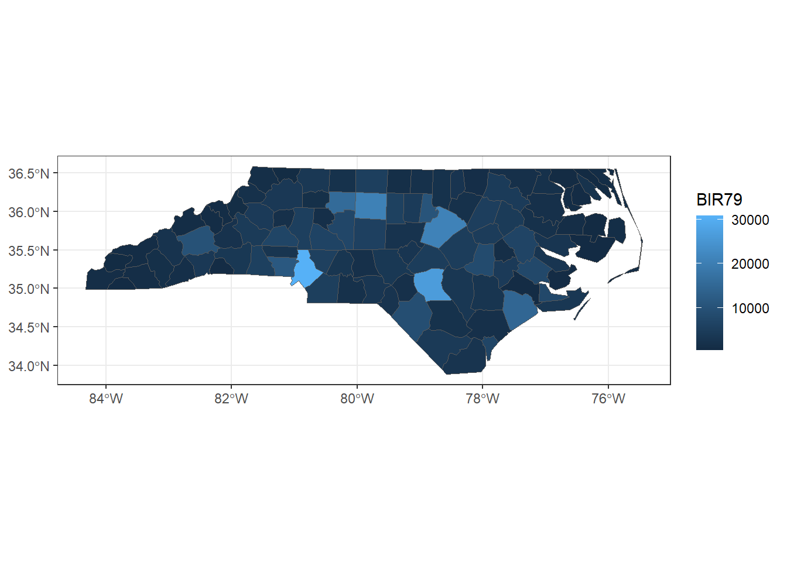
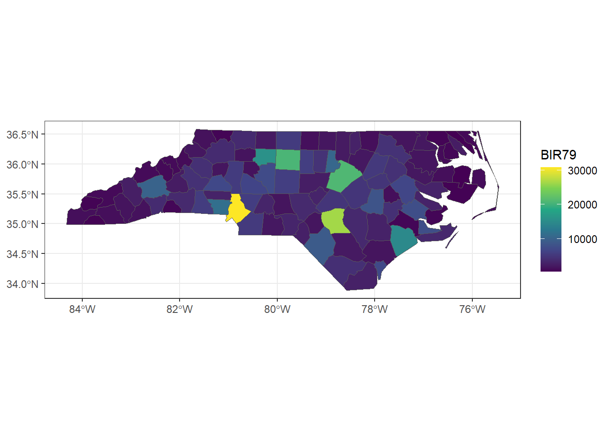
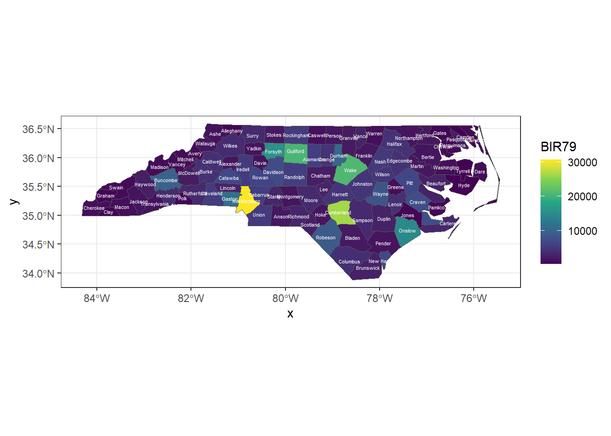
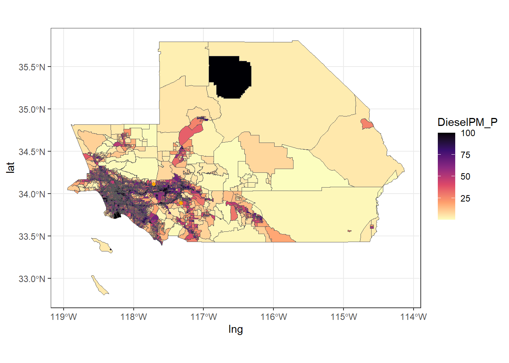
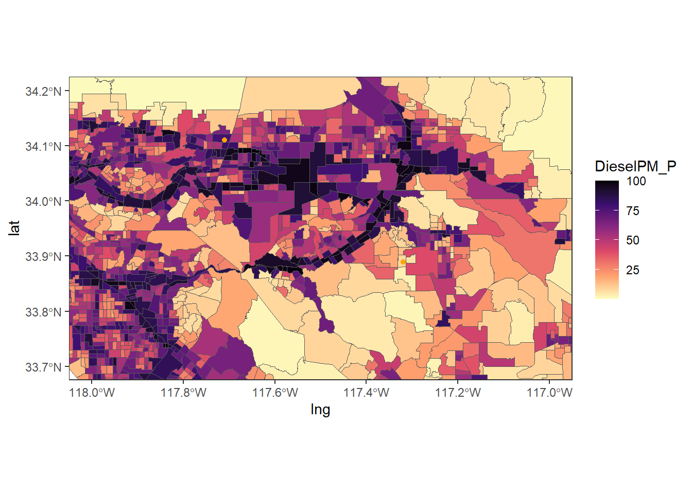

Linking to GEOS 3.12.1, GDAL 3.8.4, PROJ 9.3.1; sf_use_s2() is TRUE4 Introduction to Spatial Visualization 2
Today we will be focusing on the practice of geospatial data visualization.
Once again, my preferred framework for the workflow of data visualization is shown in Figure 4.1

4.1 Load and Install Packages
Load ggplot2 and sf packages. Today we will be making static maps in ggplot2 which is part of the tidyverse ecosystem. We need the sf package to load, transform, and display geospatial data.
4.2 Acquire Data
Import the nc and SoCalEJ datasets again. Refer to Chapter 3 for details on functions.
nc <- st_read(system.file("shape/nc.shp", package="sf")) |>
st_transform("+proj=longlat +ellps=WGS84 +datum=WGS84")Reading layer `nc' from data source
`C:\Users\MichaelMcCarthy\AppData\Local\R\cache\R\renv\cache\v5\R-4.4\x86_64-w64-mingw32\sf\1.0-16\ad57b543f7c3fca05213ba78ff63df9b\sf\shape\nc.shp'
using driver `ESRI Shapefile'
Simple feature collection with 100 features and 14 fields
Geometry type: MULTIPOLYGON
Dimension: XY
Bounding box: xmin: -84.32385 ymin: 33.88199 xmax: -75.45698 ymax: 36.58965
Geodetic CRS: NAD27tail(nc)Simple feature collection with 6 features and 14 fields
Geometry type: MULTIPOLYGON
Dimension: XY
Bounding box: xmin: -79.07426 ymin: 33.88212 xmax: -76.28737 ymax: 35.01676
Geodetic CRS: +proj=longlat +ellps=WGS84 +datum=WGS84
AREA PERIMETER CNTY_ CNTY_ID NAME FIPS FIPSNO CRESS_ID BIR74 SID74
95 0.125 2.868 2156 2156 Carteret 37031 37031 16 2414 5
96 0.225 2.107 2162 2162 Bladen 37017 37017 9 1782 8
97 0.214 2.152 2185 2185 Pender 37141 37141 71 1228 4
98 0.240 2.365 2232 2232 Columbus 37047 37047 24 3350 15
99 0.042 0.999 2238 2238 New Hanover 37129 37129 65 5526 12
100 0.212 2.024 2241 2241 Brunswick 37019 37019 10 2181 5
NWBIR74 BIR79 SID79 NWBIR79 geometry
95 341 3339 4 487 MULTIPOLYGON (((-77.14865 3...
96 818 2052 5 1023 MULTIPOLYGON (((-78.26123 3...
97 580 1602 3 763 MULTIPOLYGON (((-78.02565 3...
98 1431 4144 17 1832 MULTIPOLYGON (((-78.65546 3...
99 1633 6917 9 2100 MULTIPOLYGON (((-77.96045 3...
100 659 2655 6 841 MULTIPOLYGON (((-78.65546 3...URL.path <- 'https://raw.githubusercontent.com/RadicalResearchLLC/EDVcourse/main/CalEJ4/CalEJ.geoJSON'
SoCalEJ <- st_read(URL.path) |>
st_transform("+proj=longlat +ellps=WGS84 +datum=WGS84")Reading layer `CalEJ' from data source
`https://raw.githubusercontent.com/RadicalResearchLLC/EDVcourse/main/CalEJ4/CalEJ.geoJSON'
using driver `GeoJSON'
Simple feature collection with 3747 features and 66 fields
Geometry type: MULTIPOLYGON
Dimension: XY
Bounding box: xmin: 97418.38 ymin: -577885.1 xmax: 539719.6 ymax: -236300
Projected CRS: NAD83 / California Alberstail(SoCalEJ)Simple feature collection with 6 features and 66 fields
Geometry type: MULTIPOLYGON
Dimension: XY
Bounding box: xmin: -118.2062 ymin: 33.96317 xmax: -117.9014 ymax: 34.16102
Geodetic CRS: +proj=longlat +ellps=WGS84 +datum=WGS84
Tract ZIP County ApproxLoc TotPop19 CIscore CIscoreP
3742 6037400602 91702 Los Angeles Azusa 4250 32.63778 63.50227
3743 6037430302 91016 Los Angeles Monrovia 5339 17.12483 30.61019
3744 6037430723 91007 Los Angeles Arcadia 4365 13.84199 22.56682
3745 6037431100 91016 Los Angeles Monrovia 6758 39.69785 74.50832
3746 6037533603 90201 Los Angeles Bell 6986 62.93104 97.04992
3747 6037534101 90201 Los Angeles Bell Gardens 2358 63.31505 97.22642
Ozone OzoneP PM2_5 PM2_5_P DieselPM DieselPM_P Pesticide
3742 0.06236471 88.69944 11.32762 58.23273 0.25141035 70.16801 0.00000
3743 0.06236471 88.69944 11.87334 72.10952 0.03484052 12.43311 0.00000
3744 0.05938691 79.98755 11.81607 70.24269 0.05856793 21.30678 0.00000
3745 0.06133785 84.57996 11.89265 72.90604 0.52993389 90.91475 0.00000
3746 0.04632538 46.99440 12.01973 79.45240 0.11636699 42.26509 0.00000
3747 0.04716458 50.54138 12.02588 79.77598 0.89400714 97.51089 25.17289
PesticideP Tox_Rel Tox_Rel_P Traffic TrafficP DrinkWat DrinkWatP
3742 0.00000 1128.208 66.72918 515.5913 22.0875 365.8082 37.91682
3743 0.00000 1235.359 69.21730 471.5739 18.7625 570.8214 66.86649
3744 0.00000 1324.937 70.43011 1003.0337 57.9875 667.6980 73.14850
3745 0.00000 1575.716 74.35609 1560.1642 79.2625 497.7552 60.33471
3746 0.00000 4435.870 91.04776 1071.6749 62.4000 639.0632 71.36256
3747 67.58621 4409.633 90.89772 3653.6009 98.0750 514.1607 61.83340
Lead Lead_P Cleanup CleanupP GWThreat GWThreatP HazWaste HazWasteP
3742 59.07638 64.54946 3.00 31.243001 46.85 89.10842 0.460 66.60490
3743 71.04484 80.34026 1.40 19.914147 1.80 11.30666 0.320 52.64064
3744 50.87304 52.71582 0.40 5.636432 5.00 30.88162 0.150 26.67108
3745 54.59725 57.99622 43.50 94.438223 36.75 84.14411 1.885 92.15089
3746 87.11610 94.82042 14.65 74.300112 17.05 63.42354 0.375 58.80874
3747 90.85649 97.39130 20.35 82.232176 15.00 59.60485 1.110 86.60490
ImpWatBod ImpWatBodP SolWaste SolWasteP PollBurd PolBurdSc PolBurdP Asthma
3742 0 0.00000 0.00 0.000000 46.49568 5.677114 60.95831 71.92
3743 3 33.15834 0.25 11.592211 42.60985 5.202654 50.36714 48.33
3744 0 0.00000 0.00 0.000000 39.69752 4.847059 42.02862 18.84
3745 2 23.87652 8.75 87.949599 68.86648 8.408583 97.88426 46.90
3746 7 66.73667 2.00 52.898053 61.77303 7.542474 93.03049 54.25
3747 7 66.73667 0.20 9.667812 73.95742 9.030186 99.39017 52.71
AsthmaP LowBirtWt LowBirWP Cardiovas CardiovasP Educatn EducatP
3742 79.847956 5.09 54.849885 17.02 76.34596 14.1 53.40420
3743 53.950648 2.72 6.209905 11.22 39.70588 6.4 27.61326
3744 7.614656 3.48 15.871183 7.73 11.83948 4.5 18.80537
3745 51.856929 3.91 24.570182 10.87 36.88933 16.0 57.61832
3746 62.076271 5.87 72.478830 23.93 96.68495 42.6 91.88813
3747 59.895314 2.87 7.775212 23.15 95.45115 46.0 94.25462
Ling_Isol Ling_IsolP Poverty PovertyP Unempl UnemplP HousBurd HousBurdP
3742 5.6 40.89863 24.0 42.61307 2.9 15.838105 17.1 49.72117
3743 7.0 48.72107 18.9 31.73367 1.2 1.900052 15.4 40.89987
3744 13.6 73.09514 23.2 41.03015 4.0 30.882353 17.7 52.61090
3745 10.1 62.24117 32.2 57.29899 6.2 59.383134 13.3 29.72117
3746 21.7 88.69942 59.9 91.55779 9.1 82.326913 20.4 64.46134
3747 11.7 67.72229 56.1 88.31658 9.3 83.224883 22.0 70.53232
PopChar PopCharSc PopCharP Child_10 Pop_10_64 Elderly65 Hispanic White
3742 55.42148 5.749009 58.49723 13.3882 74.3294 12.2824 68.1412 20.7294
3743 31.73120 3.291557 22.33989 9.7584 72.7664 17.4752 28.7132 53.3995
3744 27.52994 2.855750 16.50277 12.0504 77.4570 10.4926 10.9507 26.3918
3745 45.51235 4.721110 43.58296 11.2607 81.4442 7.2951 58.2273 16.1438
3746 80.43337 8.343554 92.93999 18.4226 72.1586 9.4188 91.4114 6.9425
3747 67.59201 7.011489 76.72718 14.8431 75.0636 10.0933 91.0941 1.3147
AfricanAm NativeAm OtherMult Shape_Leng Shape_Area AAPI
3742 2.0941 0.3529 0.8941 6661.381 1537875.2 7.7882
3743 1.5733 0.0000 7.1549 7166.131 1938015.8 9.1590
3744 3.3677 0.0000 3.3677 3941.782 485563.0 55.9221
3745 8.9967 0.0000 1.1098 8020.091 3015660.7 15.5223
3746 0.6728 0.2577 0.7157 4949.117 811895.5 0.0000
3747 1.9084 0.0000 0.0000 4420.127 509871.8 5.6828
geometry
3742 MULTIPOLYGON (((-117.9024 3...
3743 MULTIPOLYGON (((-117.9917 3...
3744 MULTIPOLYGON (((-118.0496 3...
3745 MULTIPOLYGON (((-117.9987 3...
3746 MULTIPOLYGON (((-118.1874 3...
3747 MULTIPOLYGON (((-118.1636 3...4.2.1 Create a Locations Table
I want to show the location of this classroom and my neighborhood. Let’s add locations again.
lat <- c(34.1100576, 33.8895145)
lng <- c(-117.710074, -117.319014)
locations <- data.frame(lat, lng)
locations lat lng
1 34.11006 -117.7101
2 33.88951 -117.3190
4.3 Visualize the Data - Geospatial ggplot Edition
While the tidyverse doesn’t have all the features of leaflet, it can be a quick way to visualize geospatial data for static maps and there are times when adding a static ggplot map is sufficient and actually preferred to the more detailed leaflet maps.
Let’s do a few example ggplot maps.
4.3.1 Visualization functions
-
ggplot()-
geom_sf()- displaysfspatial data -
theme_bw()- a cleaner background and visualization than default gray background forggplot -
theme_minimal()- minimalist theme
-
4.3.2 Make a basic visualization
Start with the North Carolina data and make a basic ggplot and geom_sf map as shown in Figure 4.2.
Note that ggplot uses + rather than the magrittr |> for connecting lines of code.
In contrast to the leaflet map, the ggplot defaults to showing the x- and y-axis coordinates (latitude and longitude), shows guidelines, and only draws the counties in the dataset, rather than defaulting to showing an interactive map.
Figure 4.3 shows the same style of map replacing nc with SoCalEJ.
4.3.3 Improve the Visualization
We have many options to improve a ggplot visualization. Let’s start by cleaning up the background using theme_bw(). theme_bw() changes the background from gray to a cleaner black-white style as shown in Figure 4.4.

We can apply a minimalist aesthetic by choosing theme_minimal() as shown in Figure 4.5
ggplot() +
geom_sf(data = nc) +
theme_minimal()

Let’s add colors in a ggplot way.
Use aes(fill = <VARIABLE NAME>) to assign a category to color the counties by. The color palette to fill with is selected in scale_fill_<TYPE> where TYPE can be any of the following categories
- binned
- brewer
- continuous
- date or datetime
- discrete
- fermenter
- viridis
First let’s use the default palette for BIR79 to show the county birthrates in 1979. Adding fill = BIR79 to the aes() defaults to the Blues palette. Figure 4.6 shows the result of adding a fill color scale.

Let’s change that to a viridis color scale. The function scale_fill_viridis_c() adds a fancier color-blind viridis palette in a continuous scale. Figure 4.7 shows this color scale option.
ggplot() +
geom_sf(data = nc, aes(fill = BIR79)) +
theme_bw() +
scale_fill_viridis_c()

We can also add other geoms, like points or labels to this map. Let’s try to label the counties.
The nc dataset has a variable called NAME for the county names. Figure 4.8 shows the figure when we add the county names using the function geom_sf_text().
ggplot(data = nc) +
geom_sf(aes(fill = BIR79)) +
geom_sf_text(aes(label = NAME), size = 1.5, color = 'white') +
theme_bw() +
scale_fill_viridis_c()Warning in st_point_on_surface.sfc(sf::st_zm(x)): st_point_on_surface may not
give correct results for longitude/latitude data

There is a lot going on in that function. I made the text white color = ‘white’, the size of the font 1.5 size = 1.5, and added the label aesthetic with aes(label = NAME). If you remove the size or the color, you can see why those alterations were made.
4.3.3.1 Exercise - Improve the SoCalEJ Visualization
- Add a different
themefrom one of the theme options - Show a variable (categorical, continuous, or quantile) using a fill option.
- Add two or more SoCal locations to the map using
geom_pointand your locations table. If that is easy, try increasing the salience of the points through size, color, or shape modifications to that layer.
Figure 4.9 shows a potential example of what that might look like.

It is really hard to see the details here. Let’s learn one last trick to zoom in on a ggplot to adjust the axes. The scale_x_continuous() and scale_y_continuous() functions allow us to set different axis limits. Figure 4.10 shows the
ggplot() +
geom_sf(data = SoCalEJ, aes(fill = DieselPM_P)) +
geom_point(data = locations, aes(x = lng, y = lat), color = 'orange') +
theme_bw() +
scale_fill_viridis_c(option = 'A', direction = -1) +
scale_x_continuous(limits = c(-118, -117)) +
scale_y_continuous(limits = c(33.7, 34.2))

4.3.3.2 Noodle Zone
Only includes nc data at this point. Can add SoCalEJ if needed.